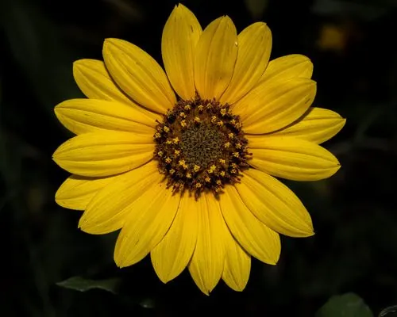

花卉与草本 · 植物界
向日葵 Helianthus annuus

原产北美的菊科一年生草本，花盘硕大金黄，幼株能随光转动，既是重要的油料作物，也是著名的花海观赏植物。
- 分类
- 门被子植物门纲木兰纲目菊目科菊科属向日葵属
- 栖息环境
- 开阔草原、路边荒地及农田，喜阳光充足、排水良好的环境
- 地理分布
- 原产北美洲，现广泛栽培于中国、俄罗斯、乌克兰、阿根廷等地
- 保护级别
- 暂无评估
物种志
向日葵为一年生高大草本，茎秆粗壮直立，高 1–3 米，全体被短硬毛。叶片宽大呈心形，边缘有粗锯齿，互生。头状花序直径可达 10–30 厘米，外围一圈金黄色舌状花，中央密生管状花，结出的瘦果即常见的葵花籽。
野生向日葵原产北美洲西部草原，喜阳光充足、温暖干燥的环境，根系可深达 1.5 米以上，耐旱而不耐水涝。花期 7–9 月，果期 8–10 月，幼株的花盘会随太阳转动，成熟后则固定朝向东方。种子含油率约 40%–50%，可榨食用油、炒食或作饲料；世界主产区有乌克兰、俄罗斯、阿根廷及中国内蒙古、新疆等地，成片花田也带火了乡村旅游。榨油后的饼粕可作饲料，茎秆还能用于造纸或压制成燃料。
形态与习性
- 株高1–3 米，茎秆粗壮直立
- 花期7–9 月，单朵花序开放约 7–10 天
- 果期8–10 月，成熟花盘因结籽而低垂
- 光照喜强光，每天需 6 小时以上直射光
- 水分耐旱，苗期需水较多，忌积水
- 土壤疏松肥沃、排水良好的沙壤土，耐轻度盐碱
- 主要用途葵花籽榨油与炒食，花盘可作切花观赏
趣味知识
- 向日葵幼株的花盘会追随太阳转动，成熟后固定朝东，这一现象称为向光性。
- 我们看到的“一朵”向日葵其实由数百至上千朵小花组成，外围舌状花不结实。
- 花盘成熟后因种子增重而低垂，可避免雨水积在盘面导致霉变。
- 高油品种的种子含油率可达 50%，葵花籽油富含亚油酸。
生态关系
- 传粉 ← 西方蜜蜂 蜜蜂为向日葵传粉